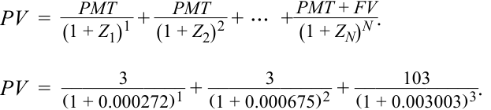

Learning Module 9 The Term Structure of Interest Rates: Spot, Par, and Forward Curves - Part 3: Solutions
Volume 6: Fixed Income
Learning Module 9 The Term Structure of Interest Rates: Spot, Par, and Forward Curves
Part 3/3: Solutions (PDF Pages 247–248)
Tập 6: Thu nhập Cố định (Fixed Income)
Học phần 9: Cấu trúc Kỳ hạn của Lãi suất: Đường cong Lãi suất Giao ngay, Đường cong Lãi suất Ngang giá và Đường cong Lãi suất Kỳ hạn (The Term Structure of Interest Rates: Spot, Par, and Forward Curves)
Phần 3/3: Lời giải (Trang PDF 247–248)
~~SOLUTIONS~~
LỜI GIẢI (SOLUTIONS)
-
C is correct. Given that Switzerland’s current five-year spot (and par) rate is negative, any non-negative coupon will cause the Swiss government to issue debt at a premium to par. Issuance of debt without a coupon will minimize the size of the premium.
-
B is correct.
-
C là đáp án đúng. Với việc lãi suất giao ngay (và lãi suất ngang giá) kỳ hạn 5 năm hiện tại của Thụy Sĩ là âm, bất kỳ mức coupon không âm nào cũng sẽ khiến chính phủ Thụy Sĩ phát hành nợ ở mức phần trội (at a premium) so với mệnh giá. Việc phát hành nợ không có coupon (0,0%) sẽ tối thiểu hóa quy mô của khoản phần trội đó.
-
B là đáp án đúng.

PV = 108.07.
$PV = 108.07$.
-
C is correct. In Example 2, we calculated the three-year Canadian par rate. The par rate of 0.7952% approximates the spot rate of 0.7977%, so the most important change affecting the three-year par rate is the change in the three-year spot rate. Because it does not change, the only change will be a slight move in the par rate toward the spot rate (to approximately 0.7968%).
-
- B. By using two-year and five-year rates, the difference represents the tenor of the implied forward rate of three years, and the shorter tenor rate reflects the beginning of the forward in two years.
-
C. By using two-year and seven-year rates, the difference represents the tenor of the implied forward rate of five years, and the shorter tenor rate reflects the beginning of the forward in two years.
-
A. By using five-year and seven-year rates, the difference represents the tenor of the implied forward rate of two years, and the shorter tenor rate reflects the beginning of the forward in five years.
-
The correct answer is A. The implied five-year forward rate in two years is the 2y5y rate. To calculate, we use the seven-year Swiss government rate and the two-year Swiss government rate, as follows:
-
C là đáp án đúng. Trong Ví dụ 2, chúng ta đã tính lãi suất ngang giá 3 năm của Canada. Lãi suất ngang giá 0,7952% xấp xỉ lãi suất giao ngay 0,7977%, vì vậy sự thay đổi quan trọng nhất ảnh hưởng đến lãi suất ngang giá 3 năm là sự thay đổi trong lãi suất giao ngay 3 năm. Bởi vì nó không thay đổi, sự thay đổi duy nhất sẽ là một sự dịch chuyển nhỏ trong lãi suất ngang giá về phía lãi suất giao ngay (lên mức xấp xỉ 0,7968%, tức tăng khoảng 0,16 bps).
-
B. Bằng cách sử dụng lãi suất 2 năm và 5 năm, phần chênh lệch đại diện cho kỳ hạn (tenor) của lãi suất kỳ hạn hàm ý là 3 năm, và lãi suất có kỳ hạn ngắn hơn phản ánh thời điểm bắt đầu của giai đoạn kỳ hạn là sau 2 năm.
-
C. Bằng cách sử dụng lãi suất 2 năm và 7 năm, phần chênh lệch đại diện cho kỳ hạn của lãi suất kỳ hạn hàm ý là 5 năm, và lãi suất có kỳ hạn ngắn hơn phản ánh thời điểm bắt đầu của giai đoạn kỳ hạn là sau 2 năm.
-
A. Bằng cách sử dụng lãi suất 5 năm và 7 năm, phần chênh lệch đại diện cho kỳ hạn của lãi suất kỳ hạn hàm ý là 2 năm, và lãi suất có kỳ hạn ngắn hơn phản ánh thời điểm bắt đầu của giai đoạn kỳ hạn là sau 5 năm.
-
Đáp án đúng là A. Lãi suất kỳ hạn 5 năm hàm ý tại thời điểm sau 2 năm là lãi suất 2y5y. Để tính toán, chúng ta sử dụng lãi suất chính phủ Thụy Sĩ 7 năm và lãi suất chính phủ Thụy Sĩ 2 năm, như sau:
2y5y IFR = [(1 – 0.003402)7 /(1 – 0.007133)2 ](1/5) – 1 = 0.191%.
Choice B represents the 5y2y implied forward rate, and Choice C represents the 2y3y implied forward rate.
Lựa chọn B đại diện cho lãi suất kỳ hạn hàm ý 5y2y, và Lựa chọn C đại diện cho lãi suất kỳ hạn hàm ý 2y3y.
-
- B. This is a series of three one-year forwards, thus providing the information for a three-year spot rate.
-
C. This sequence is a one-year spot rate, followed by a two-year forward rate in one year, followed by a three-year forward rate in three years.
-
A. This sequence is a series of four one-year forwards.
-
The correct answer is C. The forward rates used to construct forward curves are derived from spot rates. Statement A is not true, because par rates are derived from spot rates. Statement B is not true, because par curves are derived from spot rates.
-
- B. In a normal interest rate environment with an upward-sloping yield curve, forward interest rates will be greater than their corresponding spot rates across
-
B. Đây là một chuỗi gồm ba lãi suất kỳ hạn 1 năm, do đó cung cấp thông tin cho lãi suất giao ngay 3 năm.
-
C. Chuỗi này là một lãi suất giao ngay 1 năm, tiếp theo là một lãi suất kỳ hạn 2 năm tại thời điểm sau 1 năm, tiếp theo là một lãi suất kỳ hạn 3 năm tại thời điểm sau 3 năm (tổng cộng 6 năm).
-
A. Chuỗi này là một chuỗi gồm bốn lãi suất kỳ hạn 1 năm (tổng cộng 4 năm).
-
Đáp án đúng là C. Các mức lãi suất kỳ hạn được sử dụng để xây dựng đường cong lãi suất kỳ hạn được suy ra từ lãi suất giao ngay. Phát biểu A không đúng, bởi vì lãi suất ngang giá được suy ra từ lãi suất giao ngay. Phát biểu B không đúng, bởi vì đường cong lãi suất ngang giá được suy ra từ lãi suất giao ngay.
- B. Trong môi trường lãi suất bình thường với đường cong lợi suất dốc lên, lãi suất kỳ hạn sẽ lớn hơn lãi suất giao ngay tương ứng của chúng qua
all maturities.
tất cả các kỳ hạn.
-
A. In an inverted spot rate environment, forward interest rates will be below their corresponding spot rates.
-
C. A flat maturity structure of interest rates is sometimes assumed. In such an environment in which spot rates are constant, this implies that future expectations are for interest rates to remain at a constant level. Thus, forward rates equal spot rates in a flat term structure environment.
-
- A. This situation is illustrated in the German and Swiss government interest rate data in which spot rates are negative while the spot rate curve is upward sloping. In such instances, par rates lie above spot rates.
-
B. This situation is illustrated in the Canadian and Australian government interest rate data in which spot rates are positive and the spot curve is normal.
-
C. This is a hypothetical case but can be seen by creating a flat spot rate curve.
-
A. Trong môi trường lãi suất giao ngay đảo ngược (inverted), lãi suất kỳ hạn sẽ nằm bên dưới lãi suất giao ngay tương ứng của chúng.
-
C. Cấu trúc đáo hạn nằm ngang của lãi suất đôi khi được giả định. Trong một môi trường như vậy, khi lãi suất giao ngay không đổi, điều này ngụ ý rằng kỳ vọng trong tương lai là lãi suất sẽ duy trì ở một mức không đổi. Do đó, lãi suất kỳ hạn bằng lãi suất giao ngay trong môi trường cấu trúc kỳ hạn nằm ngang.
-
A. Tình huống này được minh họa trong dữ liệu lãi suất chính phủ Đức và Thụy Sĩ, trong đó lãi suất giao ngay mang giá trị âm trong khi đường cong lãi suất giao ngay dốc lên. Trong những trường hợp như vậy (hoặc khi đường cong lãi suất giao ngay dương và dốc xuống), lãi suất ngang giá nằm trên lãi suất giao ngay.
-
B. Tình huống này được minh họa trong dữ liệu lãi suất chính phủ Canada và Úc, trong đó lãi suất giao ngay mang giá trị dương và đường cong lãi suất giao ngay có dạng bình thường (dốc lên).
-
C. Đây là một trường hợp giả định nhưng có thể được nhìn thấy bằng cách tạo ra một đường cong lãi suất giao ngay nằm ngang.